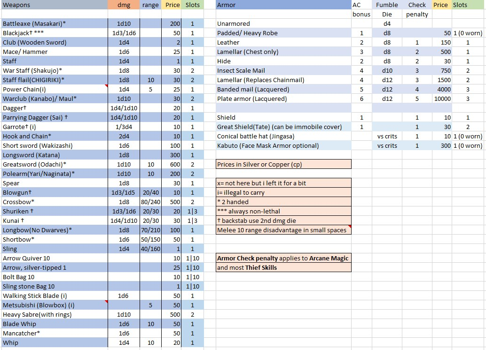
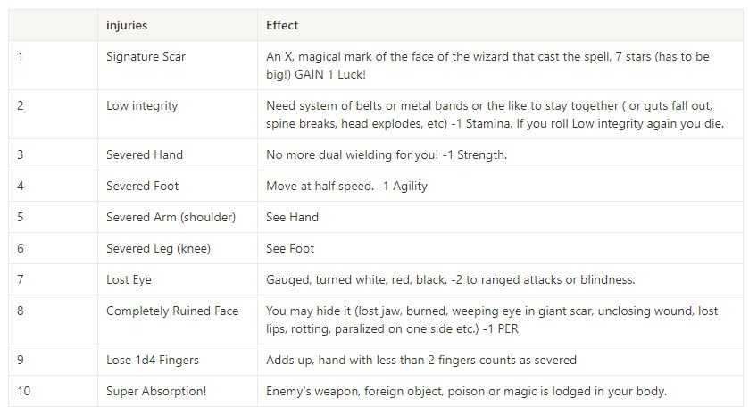

DCC Homebrew
Silver for XP

You gain XP by collecting treasure. What this should do is align player and character motivations a bit and also affect how you manage your inventory.
One silver equals 1 XP
1 Gold = 10 Silver = 100 Copper
Silver is converted into XP when you return to Town or a place that might stand in for a Town.
XP is always shared equally, regardless of who has the treasure.
Valuables like gems or jewelry don't need to be converted and their value is added to xp as if it were coin.
Magical treasure doesn't give XP unless you convert it to currency by selling it.
Killing monsters also gives a little bit of xp, 10 x their HD.
Might also be able to gain xp during downtime by doing activities that involve spending lots of cash.
All Classes gain levels at the same rate:

Inventory and Encumbrance
Inventory
Since this campaign will be focused on treasure and exploration. It needs some kind of inventory and encumbrance! It will use a simple inventory slot system:
Inventory slots = Strength
All items take up 1 slot, except:
- Large weapons are 2.
- Armor is half of ac bonus rounded down. (so padded=0, leather =1 etc.)
- Bundles ie throwing weapon/ torch/ ration(day) 3 for 1 slot
- Arrows/Bolts/Stones 10 for 1
- 100 coins(any kind) 1 slot
- Pouch for random things (o slots itself, holds 10 slots of small stuff like a diamond or a ring)
- items like backpacks give more slots
An easy way to put this on a sheet is one line per slot:
~~10 str boy inventory (without backpacks etc.)~~
1- Leather armor
2- Greatsword of Hans
3- *Greatsword of Hans (Same Sword)
4- 100 gold (100)
5- 10 silver, 50 copper, 5 gold (65/100)
6- 3/3 torches
7- 3/3 rations
8- orc head
9- Water Skin
10-open
Pouch(ring x, ring y, agate 3/10)
Readied Items
Not all of the items you carry are readily available for use in combat. Most will be in your pack or hidden away in your clothes.
Readied Items are items you can use at any time.
Max Readied Item slots = half your STR(rounded down).
Finding and being ready to use any other item takes 1d4 rounds.
Encumbrance
If you go over your slot limit you're encumbered,
-5' movespeed,
-2 AC,
Disadvantage on Reflex Saves and
+5 to fumble rolls. Can't jump, swim or climb(normally).
If you exceed your limit by
4 or more you cannot move.
Survival
Rest and Exhaustion
Rest takes 8 hours and does a few things: restores 1d6 hp and 1 point of missing ability score (relevant for spellburn etc.) also makes all spells available agian for wizard(that were lost on miscast) and halves dissaproval built up by clerics.
If you don't rest(or in some other situations) you gain exhaustion! Add 2 slots of exhaustion to your inventory.
---you can't always gain benefits from rest!
Weapons and Armor
This should replace the armor and weapon tables in the DCC manual. Prices or availability not guaranteed.

Death and Injury
When you reach 0 HP you will be disabled and have to roll on the Injury table! You lose one point of Stamina permanently regardless of injury plus whatever effects the injury may have.
Afterwards
you will survive for a number of rounds equal to your level (1 round at lvl1 and 3 at lvl3 and so on).
Injury Table

Where injury has a side:
Cause Damage,
even = right uneven = left.
Instant Death
In some cases you might forgo the injury table entirely:
1. you take more than your max HP of damage at once
2. at DMs discretion
Downtime
WIP
Little Combat Stuff
Firing into Melee
If you fire a ranged weapon into a group of characters enganged in melee you should make sure to hit!
If you miss, your shot will target a random other creature in the melee. The to hit for the attack will be the opposite of your roll (20- your roll, no mods applied).
So if you roll a natural 4 and miss, the shot will count as a 16(20-4) to hit a different target. This way near misses aren't that dangerous and skilled archers are less likely to hit friendlies.
Melee into Grapplers
The exact same principle will apply to hitting a target that's being grappled. If you miss you might hit your ally! You do get +2 to attacking a grappled target.
Modifiers
Attacking a prone target/ out of range/ range up close will work basically like 5e. Simpler than DCC tbh.
Otherwise I'll give Advantage/Disadvantage or +x modifiers when needed(stuff like high ground giving +1 to ranged fire or +2 to hitting a grappled foe).